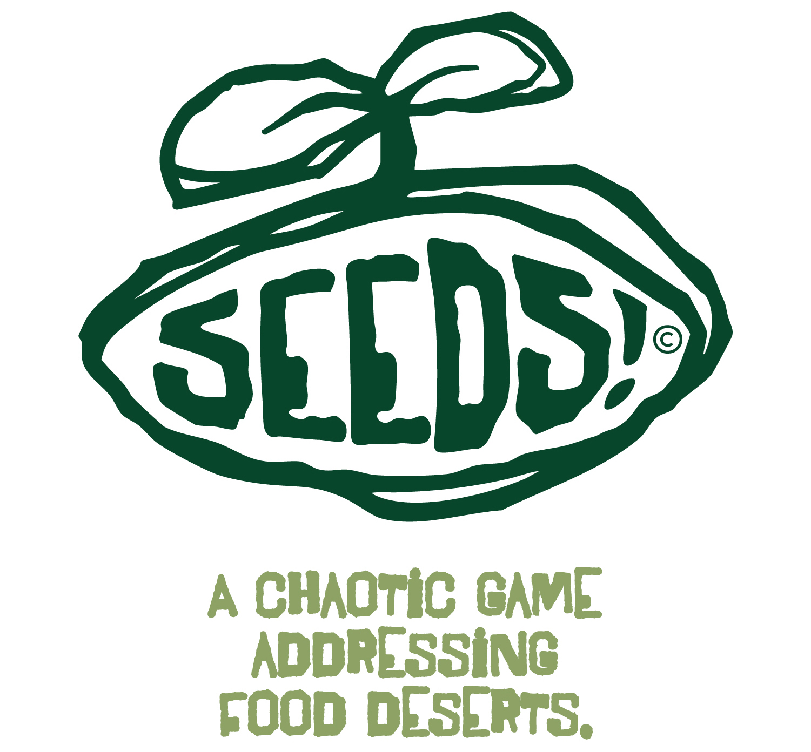
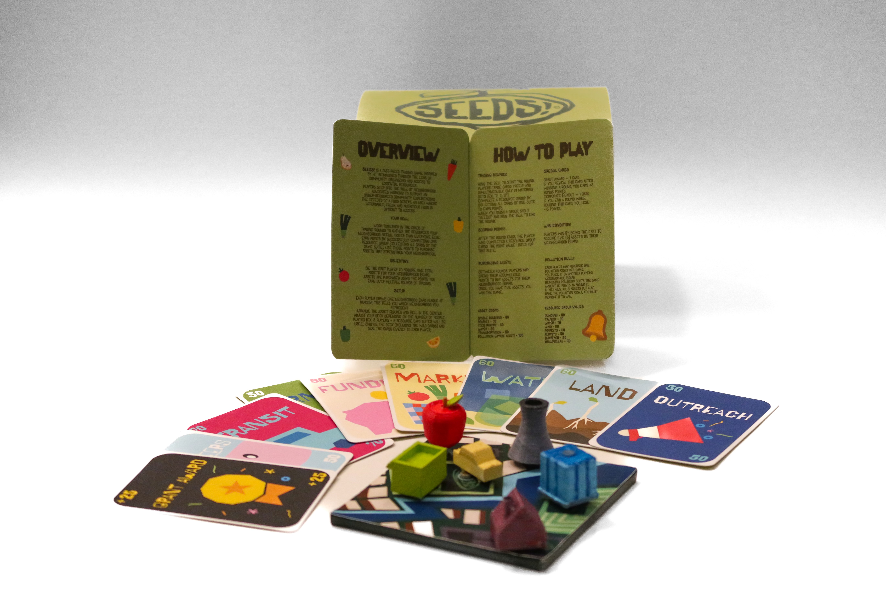
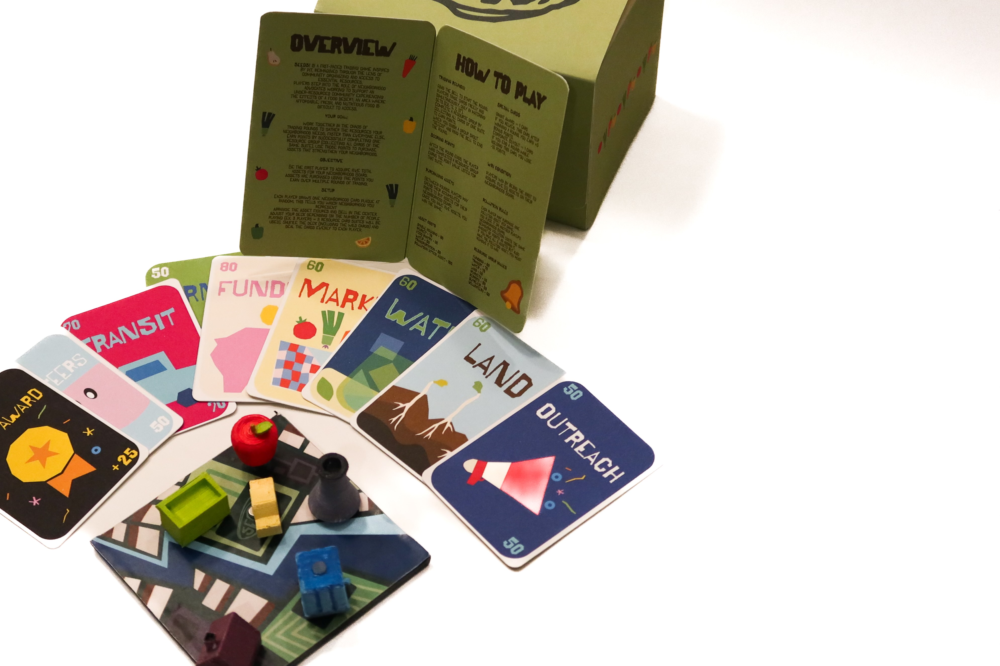
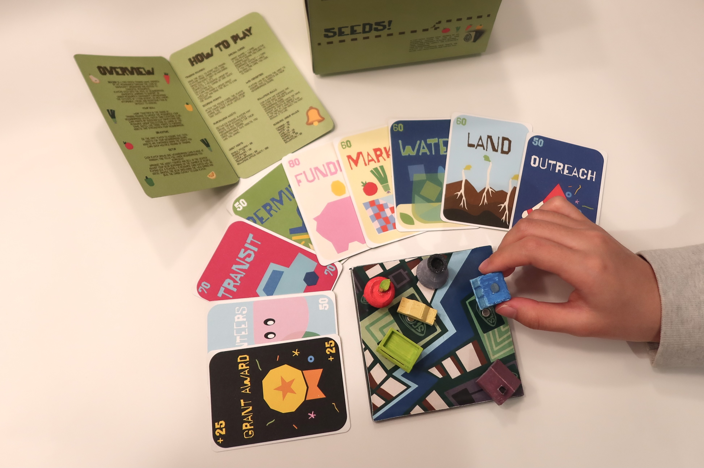
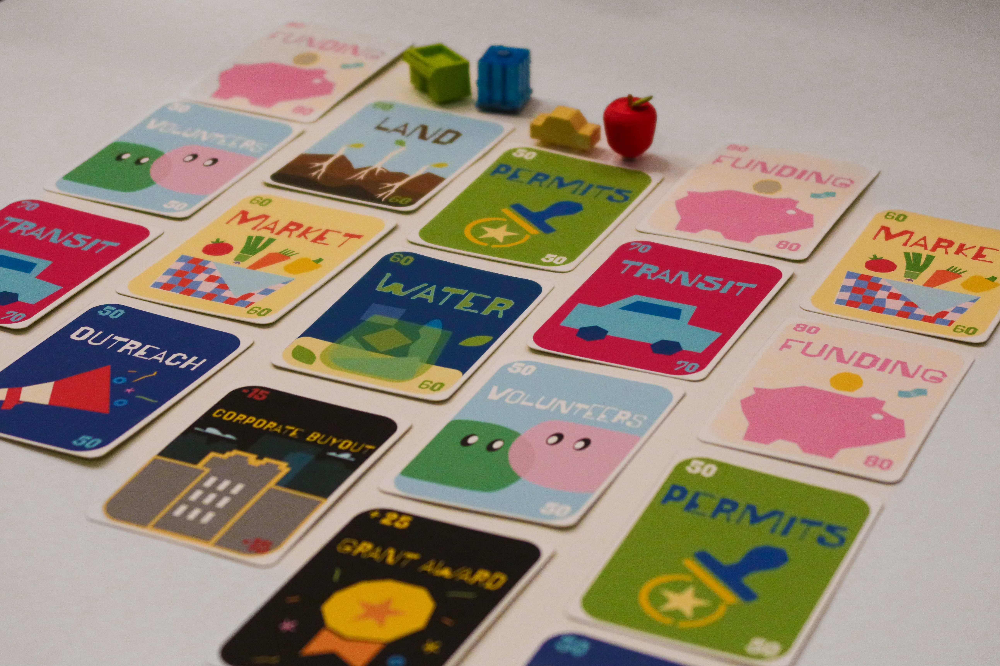
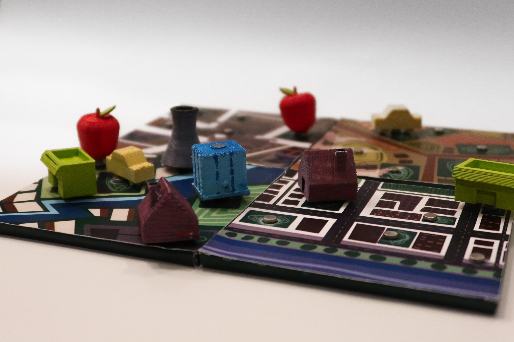

SEEDS! is a fast-paced trading game inspired by PIT, reimagined through the lens of community organizing and access to essential resources. Players step into the role of neighborhood advocates working to support an under-resourced community experiencing the effects of a food desert: an area where affordable, fresh, and nutritious food is difficult to access.
Developed as a collaborative group project, the game was designed as a fully playable, high-fidelity prototype. Core components include nine community card suits, neighborhood plaques, custom 3D-printed assets, as well as the instruction booklet, all designed to support smooth gameplay and reinforce the game's narrative.





